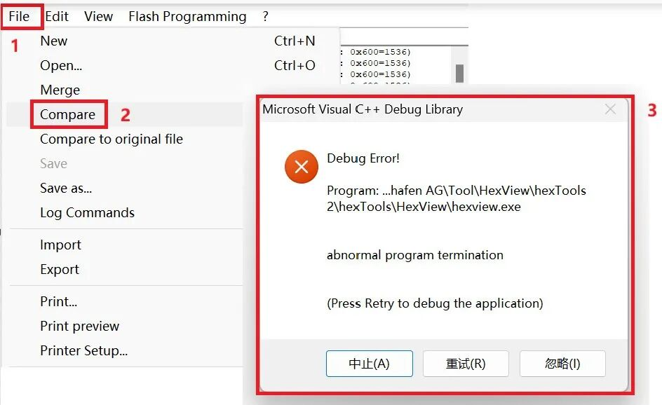
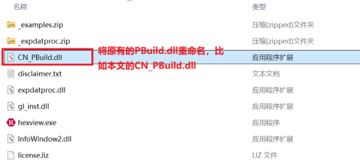
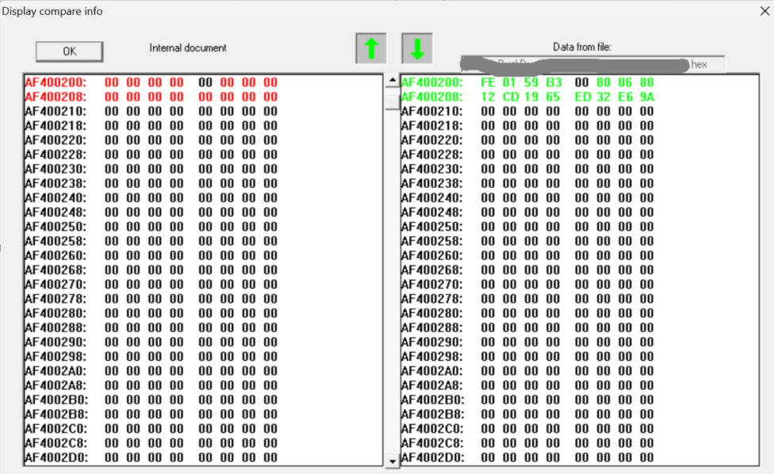

开心果 Need Car · 2025-11-21T06:20:00+08:00 · 微信原文
1、hexView比对时的问题



参考链接
https://support.vector.com/kb?id=kb_article_view&sysparm_article=KB0017271&sys_kb_id=02adf2db2bb6ae1034d2f47ebe91bf36&spa=1
点击下方关注，一起聊聊Autosar/嵌入式，如果需要，联系作者进群，给你更专业的解答
往期精彩回顾